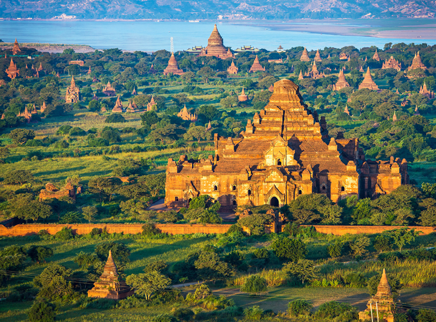

Đa phần diện tích Myanmar nằm giữa Hạ chí tuyến và Xích đạo. Myanmar nằm trong vùng gió mùa châu Á, các vùng bờ biển của nó nhận lượng mưa trung bình 5.000 mm (197 in) hàng năm. Lượng mưa hàng năm tại vùng đồng bằng gần 2.500 mm (98 in), trong khi lượng mưa trung bình hàng năm tại Vùng Khô, nằm ở trung tâm Myanmar, chưa tới 1.000 mm (39 in). Các vùng phía bắc đất nước có khí hậu lạnh nhất, nhiệt độ trung bình 21 °C (70 °F). Các vùng duyên hải và đồng bằng có nhiệt độ trung bình 32 °C (90 °F)
Tốc độ tăng trưởng kinh tế chậm của Myanmar góp phần giữ gìn môi trường và các hệ sinh thái. Rừng, gồm rừng nhiệt đới với loại gỗ tếch có giá trị kinh tế cao ở vùng hạ Myanmar, bao phủ 49% diện tích đất nước. Các loại cây khác mọc ở vùng này gồm cao su, cây keo, tre, lim, đước, dừa, cọ. Trên những cao nguyên phía bắc, sồi, thông, và nhiều giống đỗ quyên khác bao phủ đa phần diện tích. Những vùng đất dọc bờ biển có nhiều cây ăn trái nhiệt đới. Tại Vùng Khô, thực vật thưa thớt và còi cọc hơn.
Các loại động vật rừng rậm tiêu biểu, đặc biệt hổ và báo có nhiều tại Myanmar. Ở vùng Thượng Myanmar, có tê giác, trâu rừng, lợn lòi, hươu, linh dương và voi nhà, sử dụng nhiều nhất trong công nghiệp khai thác gỗ. Các loài có vú nhỏ hơn cũng rất nhiều từ vượn, khỉ tới cáo bay và heo vòi. Đáng chú ý là sự đa dạng các loài chim với hơn 800 loài gồm vẹt, peafowl, gà lôi, quạ, diệc và gõ kiến (paddybird). Trong số các loài bò sát có cá sấu, tắc kè, rắn mang bành, trăn và rùa. Hàng trăm loài cá nước ngọt, rất phong phú và là nguồn thực phẩm quan trọng